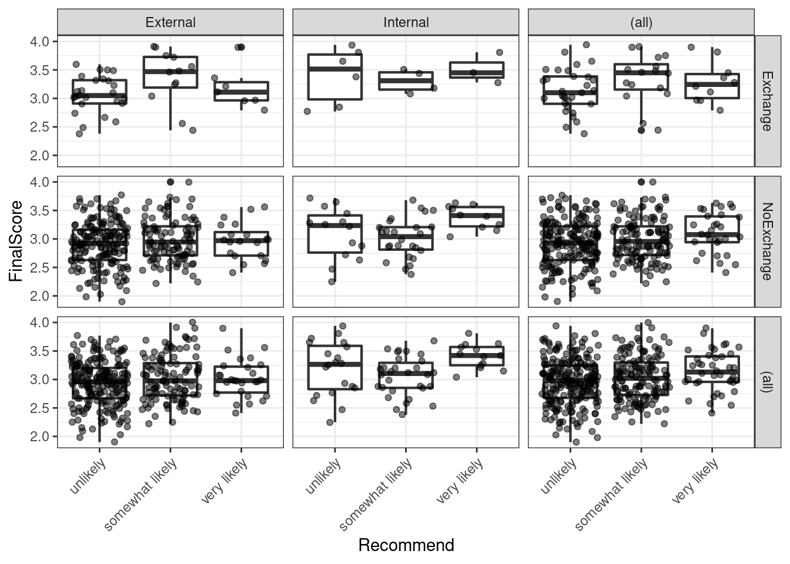

Questionnaires and Surveys: Analyses with R
Martin Schweinberger
2022-09-13

1 Introduction
This tutorial offers some advice on what to consider when creating surveys and questionnaires, provides tips on visualizing survey data, and exemplifies how survey and questionnaire data can be analyzed. As this tutorial is introductory, issues relating to what software to use when creating a survey (e.g. SurveyMonkey, Qualtrics, GoogleForms, etc.) or how to program questionnaires or online experiments in Java or R are not discussed.

This tutorial is aimed at beginners and intermediate users of R with the aim of showcasing how to visualize and analyze survey and questionnaire data using R. The aim is not to provide a fully-fledged analysis but rather to show and exemplify selected useful methods associated with surveys and questionnaires.
The entire R Notebook for the tutorial can be downloaded here. If you want to render the R Notebook on your machine, i.e. knitting the document to html or a pdf, you need to make sure that you have R and RStudio installed and you also need to download the bibliography file and store it in the same folder where you store the Rmd file.
How to use the R Notebook for this tutorial
As all calculations and visualizations in this tutorial rely on R, it is necessary to install R and RStudio. If these programs (or, in the case of R, environments) are not already installed on your machine, please search for them in your favorite search engine and add the term “download”. Open any of the first few links and follow the installation instructions (they are easy to follow, do not require any specifications, and are pretty much self-explanatory).
To follow this tutorial interactively (by using the R Notebook), follow the instructions listed below.
- Create a folder somewhere on your computer
- Download the R Notebook and save it in the folder you have just created
- Open R Studio
- Click on “File” in the upper left corner of the R Studio interface
- Click on “New Project…”
- Select „Existing Directory“
- Browse to the folder you have just created and click on “Create New Project”
- Now click on “Files” above the lower right panel
- Click on the file “surveys.Rmd”
- The Markdown file of this tutorial should now be open in the upper left panel of R Studio. To execute the code blocks used in this session, simply click on the green arrows in the top right corner of the code boxes.
- To render a PDF of this tutorial, simply click on “Knit” above the upper left panel in R Studio.
2 Design Basics
A survey is a research method for gathering information based on a sample of people. Questionnaires are a research instrument and typically represent a part of a survey, i.e. that part where participants are asked to answer a set of questions. (Brown 2001, 6) defines questionnaires as “any written instruments that present respondents with a series of questions or statements to which they are to react either by writing out their answers or selecting among existing answers.”
Questionnaires elicit three types of data:
- Factual
- Behavioral
- Attitudinal
While factual and behavioral questions are about what the respondent is and does, attitudinal questions tap into what the respondent thinks or feels.
The advantages of surveys are that they * offer a relative cheap, quick, and effective way to collect (targeted) data from a comparatively large set of people; and * that they can be distributed or carried out in various formats (face-to-face, by telephone, by computer or via social media, or by postal service).
Disadvantages of questionnaires are that they are prone to providing unreliable or unnatural data. Data gathered via surveys can be unreliable due to the social desirability bias which is the tendency of respondents to answer questions in a manner that will be viewed favorably by others. Thus, the data that surveys provide may not necessarily be representative of actual natural behavior.
Questionnaires and surveys are widely used in language research and thus one of the most common research designs. In this section, we will discuss what needs to kept in mind when designing questionnaires and surveys, what pieces of software or platforms one can use, options for visualizing questionnaire and survey data, statistical methods that are used to evaluate questionnaire and survey data (reliability), and which statistical methods are used in analyzing the data.
3 Things to consider
Here are some rules to consider during the creation of questionnaires and before any survey is distributed.
Surveys should not be longer than they have to be while they have to be long enough to collect all the data that are needed. It is crucial that a questionnaire collects all necessary data (including socio-demographic details).
The language should be simple and easy to understand - this means that jargon should be avoided. Also, leading questions and value judgement on the side of the creators of questionnaires should be avoided to prevent social desirability bias.
Before distributing a questionnaire, it should be piloted. Piloting is essential to check if respondents understand the questions as intended, and to check how long it takes to answer the questions. Also, the people who are involved in the piloting should be allowed to provide feedback to avoid errors.
When questions go beyond simply collecting socio-demographic details and if the data contains test and filler items, the order of questions (within blocks) should be quasi-randomized. Quasi-randomization means that test items are not asked in direct succession and that they do not appear as first or last items. Quasi-randomization helps to avoid fatigue effects or results that are caused by the ordering of questions. However, the questions should still follow an internally consistent logic so that related questions appear in the same block. Also, more specific questions should be asked after more general questions.
Questions must be unambiguous and they cannot ask multiple aspects at once. Take, for instance, the following question “Do you consider UQ to be a good university with respect to teaching and research?” If the respondent answers positively, then no issues arise but if the answer is negative, i.e. “No”, then we do not know if the respondent thinks that UQ is not a good university with respect to teaching OR with respect to research OR both! In such cases, questions should be split:
Do you consider UQ to be a good university with respect to teaching?
Do you consider UQ to be a good university with respect to research?"
To check if respondents are concentrated, read the questions carefully, and answering truthfully, it is useful to include reverse questions, i.e. questions that have the opposite polarity. Reverse questions allow to check if respondents only answers “very satisfied” or “completely agree” without respect to the content of the question. Giving the same answer to questions which have opposite propositions would indicate that respondents do not read questions carefully or do not answer truthfully.
If questions are not open or unstructured, i.e. if different options to answer to a question are provided, it is crucial that the options are fine-grained enough so that the data that is collected allows us to answer the research question that we want to investigate. In this context, the scaling of answer options is important. Scales reflect different types of answering options and they come in three basic forms: nominal and categorical, ordinal, or numeric.
Nominal and categorical scales: Nominal and categorical scales only list the membership of a particular class. Nominal scales offer exactly two options (yes/no or on/off), while categorical scales offer several options (e.g. the state in which someone was born).
Ordinal scales: With ordinal scales it is possible to rank the values, but the distances between the ranks can not be exactly quantified. An example of an ordinal scales is the ranking in a 100-meter run. The 2nd in a 100-meter run did not go twice as fast as the 4th. It is often the case that ordinal variables consist of integer, positive numbers (1, 2, 3, 4, etc.). In the context of surveys, ordinal scales are the most important as all Likert scales (after the psychologist Rensis Likert) are ordinal scales. The levels of the typical five-level Likert item could be: Strongly disagree (1), Disagree (2) , Neither agree nor disagree (3), Agree (4), and Strongly agree (5). As such, the Likert scale is a bipolar scale that can be balanced, if there is an uneven number of options with the center option being neutral, or unbalanced, if there are an even number of options which forces respondents to express a preferences for wither of the two poles (this is called a “forced choice” method.
(True) Numeric scales: There are two basic types of numeric scales: interval-scales and ratio-scales. For interval scales, the differences between levels are significant, but not the relationship between levels. For instance, 20 degree Celsius is not twice as hot as 10 degree Celsius. For ratio-scales both the differences and the relationships between the levels are significant (e.g. the times in a 100-meter dash: 10 is exactly twice as high as 5 and half as much as 20).
Of these scales, numeric is the most informative and questionnaires should always aim to extract the most detailed information without becoming to long.
4 Visualizing survey data
Just as the data that is provided by surveys and questionnaires can take various forms, there are numerous ways to display survey data. In the following, we will have a look at some of the most common or useful ways in which survey and questionnaire data can be visualized. However, before we can begin, we need to set up our R session as shown below.
Preparation and session set up
To run the scripts shown below without errors, certain packages need to be installed from an R library. Before turning to the code below, please install the packages by running the code below this paragraph. If you have already installed the packages mentioned below, then you can skip ahead ignore this section. To install the necessary packages, simply run the following code - it may take some time (between 1 and 5 minutes to install all of the libraries so you do not need to worry if it takes some time).
# install packages
install.packages("knitr")
install.packages("lattice")
install.packages("tidyverse")
install.packages("likert")
install.packages("MASS")
install.packages("psych")
install.packages("viridis")
install.packages("ggplot2")
install.packages("here")
install.packages("flextable")
install.packages("devtools")
install.packages("GPArotation")
# devtools::install_github("matherion/userfriendlyscience", dependencies=T)
install.packages("ufs")
# install klippy for copy-to-clipboard button in code chunks
install.packages("remotes")
remotes::install_github("rlesur/klippy")You can now activate the packages by running the code chunk below.
# set options
options(stringsAsFactors = F) # no automatic data transformation
options("scipen" = 100, "digits" = 4) # suppress math annotation
# install packages
library(knitr)
library(lattice)
library(tidyverse)
library(likert)
library(MASS)
library(psych)
library(viridis)
library(ggplot2)
library(here)
library(flextable)
library(devtools)
# library(userfriendlyscience)
# activate klippy for copy-to-clipboard button
klippy::klippy()Once you have installed R, RStudio, and have also initiated the session by executing the code shown above, you are good to go.
Line graphs for Likert-scaled data
A special case of line graphs is used when dealing with Likert-scaled variables (we will talk about Likert scales in more detail below). In such cases, the line graph displays the density of cumulative frequencies of responses. The difference between the cumulative frequencies of responses displays differences in preferences. We will only focus on how to create such graphs using the ggplot environment here as it has an in-build function (ecdf) which is designed to handle such data.
In a first step, we load a data set (ldat) which contains Likert-scaled variables. This data set represents fictitious rating of students from courses about how satisfied they were with their learning experience. The response to the Likert item is numeric so that strongly disagree/very dissatisfied would get the lowest (1) and strongly agree/very satisfied the highest numeric value (5).
# define color vectors
clrs3 <- c("firebrick4", "gray70", "darkblue")
clrs5 <- c("firebrick4", "firebrick1", "gray70", "blue", "darkblue")
# load data
ldat <- base::readRDS(url("https://slcladal.github.io/data/lid.rda", "rb"))Let’s briefly inspect the ldat data set.
Course | Satisfaction |
Chinese | 1 |
Chinese | 1 |
Chinese | 1 |
Chinese | 1 |
Chinese | 1 |
Chinese | 1 |
Chinese | 1 |
Chinese | 1 |
Chinese | 1 |
Chinese | 1 |
The ldat data set has only two columns: a column labeled Course which has three levels (German, Japanese, and Chinese) and a column labeled Satisfaction which contains values from 1 to 5 which represent values ranging from very dissatisfied to very satisfied. Now that we have data resembling a Likert-scaled item from a questionnaire, we will display the data in a cumulative line graph.
# create cumulative density plot
ldat %>%
ggplot(aes(x = Satisfaction, color = Course)) +
geom_step(aes(y = ..y..), stat = "ecdf") +
labs(y = "Cumulative Density") +
scale_x_discrete(limits = c("1","2","3","4","5"),
breaks = c(1,2,3,4,5),
labels=c("very dissatisfied", "dissatisfied",
"neutral", "satisfied", "very satisfied")) +
scale_colour_manual(values = clrs3) +
theme_bw() The satisfaction of the German course was the lowest as the red line shows the highest density (frequency of responses) of very dissatisfied and dissatisfied ratings. The students in our fictitious data set were most satisfied with the Chinese course as the blue line is the lowest for very dissatisfied and “dissatisfied” ratings while the difference between the courses shrinks for “satisfied” and very satisfied. The Japanese language course is in-between the German and the Chinese course.
Pie charts
Most commonly, the data for visualization comes from tables of absolute frequencies associated with a categorical or nominal variable. The default way to visualize such frequency tables are pie charts and bar plots. In a first step, we modify the data to get counts and percentages.
# create bar plot data
bdat <- ldat %>%
dplyr::group_by(Satisfaction) %>%
dplyr::summarise(Frequency = n()) %>%
dplyr::mutate(Percent = round(Frequency/sum(Frequency)*100, 1)) %>%
# order the levels of Satisfaction manually so that the order is not alphabetical
dplyr::mutate(Satisfaction = factor(Satisfaction,
levels = 1:5,
labels = c("very dissatisfied",
"dissatisfied",
"neutral",
"satisfied",
"very satisfied")))Let’s briefly inspect the new data set.
Satisfaction | Frequency | Percent |
very dissatisfied | 70 | 23.3 |
dissatisfied | 70 | 23.3 |
neutral | 60 | 20.0 |
satisfied | 50 | 16.7 |
very satisfied | 50 | 16.7 |
Before creating bar plots, we will briefly turn to pie charts because pie charts are very common despite suffering from certain shortcomings. Consider the following example which highlights some of the issues that arise when using pie charts.
# create pie chart
bdat %>%
ggplot(aes("", Percent, fill = Satisfaction)) +
geom_bar(stat="identity", width=1, color = "white") +
coord_polar("y", start=0) +
scale_fill_manual(values = clrs5) +
theme_void()
If the slices of the pie chart are not labelled, it is difficult to see which slices are smaller or bigger compared to other slices. This problem can easily be avoided when using a bar plot instead. This issue can be avoided by adding labels to pie charts. The labeling of pie charts is, however, somewhat tedious as the positioning is tricky. Below is an example for adding labels without specification.
# create pie chart
bdat %>%
ggplot(aes("", Percent, fill = Satisfaction)) +
geom_bar(stat="identity", width=1, color = "white") +
coord_polar("y", start=0) +
scale_fill_manual(values = clrs5) +
theme_void() +
geom_text(aes(y = Percent, label = Percent), color = "white", size=6)
To place the labels where they make sense, we will add another variable to the data called “Position”.
pdat <- bdat %>%
dplyr::arrange(desc(Satisfaction)) %>%
dplyr::mutate(Position = cumsum(Percent)- 0.5*Percent)Let’s briefly inspect the new data set.
Satisfaction | Frequency | Percent | Position |
very satisfied | 50 | 16.7 | 8.35 |
satisfied | 50 | 16.7 | 25.05 |
neutral | 60 | 20.0 | 43.40 |
dissatisfied | 70 | 23.3 | 65.05 |
very dissatisfied | 70 | 23.3 | 88.35 |
Now that we have specified the position, we can include it into the pie chart.
# create pie chart
pdat %>%
ggplot(aes("", Percent, fill = Satisfaction)) +
geom_bar(stat="identity", width=1, color = "white") +
coord_polar("y", start=0) +
scale_fill_manual(values = clrs5) +
theme_void() +
geom_text(aes(y = Position, label = Percent), color = "white", size=6)We will now create separate pie charts for each course. In a first step, we create a data set that does not only contain the Satisfaction levels and their frequency but also the course.
# create grouped pie data
gldat <- ldat %>%
dplyr::group_by(Course, Satisfaction) %>%
dplyr::summarise(Frequency = n()) %>%
dplyr::mutate(Percent = round(Frequency/sum(Frequency)*100, 1),
Satisfaction = factor(Satisfaction,
levels = 1:5,
labels = c("very dissatisfied",
"dissatisfied",
"neutral",
"satisfied",
"very satisfied"))) %>%
dplyr::arrange(desc(Satisfaction)) %>%
dplyr::mutate(Position = cumsum(Percent)- 0.5*Percent)Let’s briefly inspect the new data set.
Course | Satisfaction | Frequency | Percent | Position |
Chinese | very satisfied | 15 | 15 | 7.5 |
German | very satisfied | 5 | 5 | 2.5 |
Japanese | very satisfied | 30 | 30 | 15.0 |
Chinese | satisfied | 10 | 10 | 20.0 |
German | satisfied | 15 | 15 | 12.5 |
Japanese | satisfied | 25 | 25 | 42.5 |
Chinese | neutral | 25 | 25 | 37.5 |
German | neutral | 15 | 15 | 27.5 |
Japanese | neutral | 20 | 20 | 65.0 |
Chinese | dissatisfied | 30 | 30 | 65.0 |
German | dissatisfied | 25 | 25 | 47.5 |
Japanese | dissatisfied | 15 | 15 | 82.5 |
Chinese | very dissatisfied | 20 | 20 | 90.0 |
German | very dissatisfied | 40 | 40 | 80.0 |
Japanese | very dissatisfied | 10 | 10 | 95.0 |
Now that we have created the data, we can plot separate pie charts for each course.
# create pie chart
gldat %>%
ggplot(aes("", Percent, fill = Satisfaction)) +
facet_wrap(~Course) +
geom_bar(stat="identity", width=1, color = "white") +
coord_polar("y", start=0) +
scale_fill_manual(values = clrs5) +
theme_void() +
geom_text(aes(y = Position, label = Percent), color = "white", size=4)Bar plots
Like pie charts, bar plot display frequency information across categorical variable levels.
# bar plot
bdat %>%
ggplot(aes(Satisfaction, Percent, fill = Satisfaction)) +
# determine type of plot
geom_bar(stat="identity") +
# use black & white theme
theme_bw() +
# add and define text
geom_text(aes(y = Percent-5, label = Percent), color = "white", size=3) +
# add colors
scale_fill_manual(values = clrs5) +
# suppress legend
theme(legend.position="none")Compared with the pie chart, it is much easier to grasp the relative size and order of the percentage values which shows that pie charts are unfit to show relationships between elements in a graph and, as a general rule of thumb, should be avoided.
Bar plots can be grouped which adds another layer of information that is particularly useful when dealing with frequency counts across multiple categorical variables. But before we can create grouped bar plots, we need to create an appropriate data set.
# create bar plot data
gldat <- ldat %>%
dplyr::group_by(Course, Satisfaction) %>%
dplyr::summarise(Frequency = n()) %>%
dplyr::mutate(Percent = round(Frequency/sum(Frequency)*100, 1)) %>%
dplyr::mutate(Satisfaction = factor(Satisfaction,
levels = 1:5,
labels = c("very dissatisfied",
"dissatisfied",
"neutral",
"satisfied",
"very satisfied")))Let’s briefly inspect the data set.
Course | Satisfaction | Frequency | Percent |
Chinese | very dissatisfied | 20 | 20 |
Chinese | dissatisfied | 30 | 30 |
Chinese | neutral | 25 | 25 |
Chinese | satisfied | 10 | 10 |
Chinese | very satisfied | 15 | 15 |
German | very dissatisfied | 40 | 40 |
German | dissatisfied | 25 | 25 |
German | neutral | 15 | 15 |
German | satisfied | 15 | 15 |
German | very satisfied | 5 | 5 |
Japanese | very dissatisfied | 10 | 10 |
Japanese | dissatisfied | 15 | 15 |
Japanese | neutral | 20 | 20 |
Japanese | satisfied | 25 | 25 |
Japanese | very satisfied | 30 | 30 |
We have now added Course as an additional categorical variable and will include Course as the “fill” argument in our bar plot. To group the bars, we use the command “position=position_dodge()”.
# bar plot
gldat %>%
ggplot(aes(Satisfaction, Frequency, fill = Course)) +
geom_bar(stat="identity", position = position_dodge()) +
# define colors
scale_fill_manual(values = clrs3) +
# add text
geom_text(aes(label=Frequency), vjust=1.6, color="white",
# define text position and size
position = position_dodge(0.9), size=3.5) +
theme_bw() Bar plots are particularly useful when visualizing data obtained through Likert items. As this is a very common issue that empirical researchers face. There are two basic ways to display Likert items using bar plots: grouped bar plots and more elaborate scaled bar plots.
Although we have seen above how to create grouped bar plots, we will repeat it here with the language course example used above when we used cumulative density line graphs to visualize how to display Likert data.
In a first step, we recreate the data set which we have used above. The data set consists of a Likert-scaled variable (Satisfaction) which represents rating of students from three courses about how satisfied they were with their language-learning course. The response to the Likert item is numeric so that “strongly disagree/very dissatisfied” would get the lowest and “strongly agree/very satisfied” the highest numeric value.
Again, we can also plot separate bar graphs for each class by specifying “facets”.
# create grouped bar plot
gldat %>%
ggplot(aes(Satisfaction, Frequency,
fill = Satisfaction,
color = Satisfaction)) +
facet_grid(~Course) +
geom_bar(stat="identity", position=position_dodge()) +
geom_line() +
# define colors
scale_fill_manual(values=clrs5) +
scale_color_manual(values=clrs5) +
# add text and define color
geom_text(aes(label=Frequency), vjust=1.6, color="white",
# define text position and size
position = position_dodge(0.9), size=3.5) +
theme_bw() +
theme(axis.text.x=element_blank())
Another and very interesting way to display such data is by using the Likert package. In a first step, we need to activate the package, clean the data, and extract a subset for the data visualization example.
One aspect that is different to previous visualizations is that, when using the Likert package, we need to transform the data into a “likert” object (which is, however, very easy and is done by using the “likert()” function as shown below).
sdat <- base::readRDS(url("https://slcladal.github.io/data/sdd.rda", "rb"))Group | Respondent | How.did.you.like.the.course. | How.did.you.like.the.teacher. | Was.the.content.intersting. | Was.the.content.adequate.for.the.course. | Were.there.enough.discussions. | Was.the.use.of.online.materials.appropriate. | Was.the.teacher.appropriately.prepared. | Was.the.workload.of.the.course.appropriate. | Was.the.course.content.enganging. | Were.there.enough.interactive.exerceises.included.in.the.sessions. |
German | G1 | 4 | 4 | 4 | 4 | 4 | 4 | 4 | 4 | 4 | 4 |
German | G2 | 4 | 5 | 3 | 4 | 4 | 4 | 5 | 3 | 1 | 3 |
German | G3 | 5 | 3 | 4 | 2 | 4 | 3 | 4 | 4 | 3 | 1 |
German | G4 | 3 | 3 | 3 | 3 | 3 | 3 | 3 | 3 | 3 | 3 |
German | G5 | 1 | 1 | 1 | 1 | 1 | 1 | 1 | 1 | 1 | 1 |
German | G6 | 3 | 1 | 3 | 2 | 3 | 3 | 3 | 3 | 3 | 3 |
German | G7 | 5 | 3 | 4 | 2 | 4 | 3 | 3 | 4 | 4 | 5 |
German | G8 | 5 | 5 | 5 | 5 | 5 | 5 | 5 | 5 | 5 | 5 |
German | G9 | 5 | 1 | 3 | 3 | 4 | 4 | 5 | 5 | 3 | 1 |
German | G10 | 3 | 3 | 3 | 3 | 3 | 3 | 3 | 3 | 3 | 3 |
As you can see, we need to clean and adapt the column names. To do this, we will
- add an identifier which shows which question we are dealing with (e.g. Q 1: question text)
- remove the dots between words with spaces
- add a question mark at the end of questions
- remove superfluous white spaces
# clean column names
colnames(sdat)[3:ncol(sdat)] <- paste0("Q ", str_pad(1:10, 2, "left", "0"), ": ", colnames(sdat)[3:ncol(sdat)]) %>%
stringr::str_replace_all("\\.", " ") %>%
stringr::str_squish() %>%
stringr::str_replace_all("$", "?")
# inspect column names
colnames(sdat)## [1] "Group"
## [2] "Respondent"
## [3] "Q 01: How did you like the course?"
## [4] "Q 02: How did you like the teacher?"
## [5] "Q 03: Was the content intersting?"
## [6] "Q 04: Was the content adequate for the course?"
## [7] "Q 05: Were there enough discussions?"
## [8] "Q 06: Was the use of online materials appropriate?"
## [9] "Q 07: Was the teacher appropriately prepared?"
## [10] "Q 08: Was the workload of the course appropriate?"
## [11] "Q 09: Was the course content enganging?"
## [12] "Q 10: Were there enough interactive exerceises included in the sessions?"Now, that we have nice column names, we will replace the numeric values (1 to 5) with labels ranging from disagree to agree and convert our data into a data frame.
lbs <- c("disagree", "somewhat disagree", "neither agree nor disagree", "somewhat agree", "agree")
survey <- sdat %>%
dplyr::mutate_if(is.character, factor) %>%
dplyr::mutate_if(is.numeric, factor, levels = 1:5, labels = lbs) %>%
drop_na() %>%
as.data.frame()Group | Respondent | Q 01: How did you like the course? | Q 02: How did you like the teacher? | Q 03: Was the content intersting? | Q 04: Was the content adequate for the course? | Q 05: Were there enough discussions? | Q 06: Was the use of online materials appropriate? | Q 07: Was the teacher appropriately prepared? | Q 08: Was the workload of the course appropriate? | Q 09: Was the course content enganging? | Q 10: Were there enough interactive exerceises included in the sessions? |
German | G1 | somewhat agree | somewhat agree | somewhat agree | somewhat agree | somewhat agree | somewhat agree | somewhat agree | somewhat agree | somewhat agree | somewhat agree |
German | G2 | somewhat agree | agree | neither agree nor disagree | somewhat agree | somewhat agree | somewhat agree | agree | neither agree nor disagree | disagree | neither agree nor disagree |
German | G3 | agree | neither agree nor disagree | somewhat agree | somewhat disagree | somewhat agree | neither agree nor disagree | somewhat agree | somewhat agree | neither agree nor disagree | disagree |
German | G4 | neither agree nor disagree | neither agree nor disagree | neither agree nor disagree | neither agree nor disagree | neither agree nor disagree | neither agree nor disagree | neither agree nor disagree | neither agree nor disagree | neither agree nor disagree | neither agree nor disagree |
German | G5 | disagree | disagree | disagree | disagree | disagree | disagree | disagree | disagree | disagree | disagree |
German | G6 | neither agree nor disagree | disagree | neither agree nor disagree | somewhat disagree | neither agree nor disagree | neither agree nor disagree | neither agree nor disagree | neither agree nor disagree | neither agree nor disagree | neither agree nor disagree |
German | G7 | agree | neither agree nor disagree | somewhat agree | somewhat disagree | somewhat agree | neither agree nor disagree | neither agree nor disagree | somewhat agree | somewhat agree | agree |
German | G8 | agree | agree | agree | agree | agree | agree | agree | agree | agree | agree |
German | G9 | agree | disagree | neither agree nor disagree | neither agree nor disagree | somewhat agree | somewhat agree | agree | agree | neither agree nor disagree | disagree |
German | G10 | neither agree nor disagree | neither agree nor disagree | neither agree nor disagree | neither agree nor disagree | neither agree nor disagree | neither agree nor disagree | neither agree nor disagree | neither agree nor disagree | neither agree nor disagree | neither agree nor disagree |
Now, we can use the plot and the likert function to visualize the survey data.
plot(likert(survey[,3:12]), ordered = F, wrap= 60)To save this plot, you can use the save_plot function from the cowplot package as shown below.
survey_p1 <- plot(likert(survey[,3:12]), ordered = F, wrap= 60)
# save plot
cowplot::save_plot(here("images", "stu_p1.png"), # where to save the plot
survey_p1, # object to plot
base_asp = 1.5, # ratio of space fro questions vs space for plot
base_height = 8) # size! higher for smaller font sizeAn additional and very helpful feature is that the likert package enables grouping the data as shown below. The display columns 3 to 8 and use column 1 for grouping.
# create plot
plot(likert(survey[,3:8], grouping = survey[,1]))
5 Useful statistics
This section introduces some statistical measures or tests that useful when dealing with survey data. We will begin with measures of reliability (Cronbach’s \(\alpha\)), then move on to methods for merging variables (Factor analysis and principle component analysis), and finally to ordinal regression which tests which variables correlate with a certain outcome.
Evaluating the reliability of questions
Cronbach’s Alpha
Oftentimes several questions in one questionnaire aim to tap into the same cognitive concept or attitude or whatever we are interested in. The answers to these related questions should be internally consistent, i.e. the responses should correlate strongly and positively.
Cronbach’s \(\alpha\) (Cronbach 1951) is measure of internal consistency or reliability that provides information on how strongly the responses to a set of questions correlate. The formula for Cronbach’s \(\alpha\) is shown below (N: number of items, \(\bar c\): average inter-item co-variance among items, \(\bar v\): average variance).
\(\alpha = \frac{N*\bar c}{\bar v + (N-1)\bar c}\)
If the values for Cronbach’s \(\alpha\) are low (below .7), then this indicates that the questions are not internally consistent (and do not tap into the same concept) or that the questions are not uni-dimensional (as they should be).
While Cronbach’s \(\alpha\) is the most frequently used measures of reliability (probably because it is conceptually simple and can be computed very easily), it underestimates the reliability of a test and overestimates the first factor saturation. This can be a problem is the data is lumpy. Thus, various other measures of reliability have been proposed. Also,Cronbach’s \(\alpha\) assumes that scale items are repeated measurements, an assumption that is often violated.
An alternative reliability measure that takes the amount of variance per item into account and thus performs better when dealing with lumpy data (although it is still affected by lumpiness) is Guttman’s Lambda 6 (G6) (Guttman 1945). In contrast to Cronbach’s \(\alpha\), G6 is mostly used to evaluate the reliability of individual test items though. This means that it provides information about how well individual questions reflect the concept that they aim to tap into.
Probably the best measures of reliability are \(\omega\) (omega) measures. Hierarchical \(\omega\) provides more appropriate estimates of the general factor saturation while total \(\omega\) is a better estimate of the reliability of the total test compared to both Cronbach’s \(\alpha\) and G6 (Revelle and Zinbarg 2009).
Calculating Cronbach’s alpha in R
We will now calculate Cronbach’s \(\alpha\) in R. In a first step, we activate the “psych” package and load as well as inspect the data.
# load data
surveydata <- base::readRDS(url("https://slcladal.github.io/data/sud.rda", "rb"))Respondent | Q01_Outgoing | Q02_Outgoing | Q03_Outgoing | Q04_Outgoing | Q05_Outgoing | Q06_Intelligence | Q07_Intelligence | Q08_Intelligence | Q09_Intelligence | Q10_Intelligence | Q11_Attitude | Q12_Attitude | Q13_Attitude | Q14_Attitude | Q15_Attitude |
Respondent_01 | 4 | 5 | 4 | 4 | 5 | 2 | 3 | 3 | 2 | 2 | 3 | 3 | 2 | 3 | 3 |
Respondent_02 | 5 | 4 | 5 | 4 | 4 | 2 | 2 | 2 | 1 | 2 | 4 | 4 | 4 | 5 | 4 |
Respondent_03 | 5 | 4 | 4 | 5 | 5 | 2 | 1 | 1 | 2 | 2 | 5 | 4 | 4 | 4 | 4 |
Respondent_04 | 5 | 5 | 5 | 4 | 5 | 1 | 1 | 1 | 1 | 1 | 5 | 4 | 5 | 5 | 5 |
Respondent_05 | 4 | 5 | 4 | 5 | 5 | 2 | 2 | 1 | 2 | 1 | 4 | 5 | 4 | 5 | 5 |
Respondent_06 | 5 | 5 | 5 | 5 | 4 | 5 | 4 | 5 | 2 | 2 | 1 | 2 | 1 | 2 | 1 |
Respondent_07 | 4 | 5 | 4 | 5 | 5 | 4 | 5 | 4 | 4 | 5 | 2 | 1 | 1 | 2 | 1 |
Respondent_08 | 4 | 4 | 5 | 4 | 5 | 5 | 4 | 5 | 4 | 5 | 1 | 2 | 1 | 1 | 2 |
Respondent_09 | 5 | 5 | 4 | 4 | 4 | 5 | 5 | 4 | 4 | 5 | 1 | 2 | 2 | 1 | 2 |
Respondent_10 | 4 | 5 | 5 | 4 | 4 | 4 | 4 | 5 | 4 | 5 | 2 | 1 | 2 | 2 | 1 |
Respondent_11 | 2 | 2 | 2 | 1 | 1 | 4 | 5 | 5 | 5 | 4 | 1 | 2 | 2 | 2 | 1 |
Respondent_12 | 3 | 3 | 2 | 3 | 2 | 5 | 5 | 5 | 5 | 4 | 1 | 2 | 1 | 1 | 1 |
Respondent_13 | 3 | 2 | 2 | 2 | 3 | 4 | 3 | 4 | 5 | 4 | 2 | 2 | 1 | 2 | 2 |
Respondent_14 | 2 | 2 | 2 | 1 | 1 | 3 | 4 | 3 | 5 | 4 | 1 | 2 | 1 | 1 | 1 |
Respondent_15 | 1 | 2 | 2 | 2 | 1 | 1 | 2 | 2 | 2 | 5 | 4 | 3 | 4 | 4 | 5 |
Respondent_16 | 1 | 1 | 1 | 1 | 2 | 2 | 3 | 2 | 1 | 4 | 3 | 4 | 4 | 3 | 4 |
Respondent_17 | 2 | 2 | 2 | 2 | 2 | 2 | 2 | 2 | 2 | 2 | 1 | 1 | 1 | 2 | 2 |
Respondent_18 | 1 | 1 | 1 | 1 | 1 | 1 | 2 | 2 | 2 | 5 | 5 | 5 | 5 | 5 | 5 |
Respondent_19 | 2 | 2 | 3 | 2 | 3 | 2 | 1 | 1 | 1 | 5 | 4 | 5 | 5 | 4 | 5 |
Respondent_20 | 1 | 1 | 1 | 1 | 2 | 2 | 3 | 2 | 2 | 5 | 5 | 5 | 5 | 5 | 5 |
The inspection of the data shows that the responses of participants represent the rows and that the questions represent columns. The column names show that we have 15 questions and that the first five questions aim to test how outgoing respondents are. To check if the first five questions reliably test “outgoingness” (or “extraversion”), we calculate Cronbach’s alpha for these five questions.
Thus, we use the “alpha()” function and provide the questions that tap into the concept we want to assess. In addition to Cronbach’s \(\alpha\), the “alpha()” function also reports Guttman’s lambda_6 which is an alternative measure for reliability. This is an advantage because Cronbach’s \(\alpha\) underestimates the reliability of a test and overestimates the first factor saturation.
# calculate cronbach's alpha
Cronbach <- psych::alpha(surveydata[c("Q01_Outgoing",
"Q02_Outgoing",
"Q03_Outgoing",
"Q04_Outgoing",
"Q05_Outgoing")], check.keys=F)
# inspect results
Cronbach##
## Reliability analysis
## Call: psych::alpha(x = surveydata[c("Q01_Outgoing", "Q02_Outgoing",
## "Q03_Outgoing", "Q04_Outgoing", "Q05_Outgoing")], check.keys = F)
##
## raw_alpha std.alpha G6(smc) average_r S/N ase mean sd median_r
## 0.98 0.98 0.97 0.89 42 0.0083 3.1 1.5 0.9
##
## 95% confidence boundaries
## lower alpha upper
## Feldt 0.96 0.98 0.99
## Duhachek 0.96 0.98 0.99
##
## Reliability if an item is dropped:
## raw_alpha std.alpha G6(smc) average_r S/N alpha se var.r med.r
## Q01_Outgoing 0.97 0.97 0.97 0.89 33 0.0108 0.00099 0.89
## Q02_Outgoing 0.97 0.97 0.96 0.89 31 0.0116 0.00054 0.89
## Q03_Outgoing 0.97 0.97 0.97 0.90 35 0.0104 0.00095 0.90
## Q04_Outgoing 0.97 0.97 0.96 0.89 31 0.0115 0.00086 0.89
## Q05_Outgoing 0.98 0.98 0.97 0.91 41 0.0088 0.00034 0.91
##
## Item statistics
## n raw.r std.r r.cor r.drop mean sd
## Q01_Outgoing 20 0.96 0.96 0.95 0.94 3.1 1.5
## Q02_Outgoing 20 0.97 0.97 0.96 0.95 3.2 1.6
## Q03_Outgoing 20 0.95 0.95 0.94 0.93 3.1 1.5
## Q04_Outgoing 20 0.97 0.97 0.96 0.95 3.0 1.6
## Q05_Outgoing 20 0.94 0.94 0.91 0.90 3.2 1.6
##
## Non missing response frequency for each item
## 1 2 3 4 5 miss
## Q01_Outgoing 0.20 0.2 0.10 0.25 0.25 0
## Q02_Outgoing 0.15 0.3 0.05 0.15 0.35 0
## Q03_Outgoing 0.15 0.3 0.05 0.25 0.25 0
## Q04_Outgoing 0.25 0.2 0.05 0.30 0.20 0
## Q05_Outgoing 0.20 0.2 0.10 0.20 0.30 0The output of the “alpha()” function is rather extensive and we will only interpret selected output here.
The value under alpha is Cronbach’s \(\alpha\) and it should be above 0.7. The values to its left and right are the lower and upper bound of its confidence interval. The values in the column with the header “G6” show how well each question represents the concept it aims to reflect. Low values indicate that the question does not reflect the underlying concept while high values (.7 and higher) indicate that the question captures that concept well (or to an acceptable degree).
Omega
The omega (\(\omega\)) coefficient is also a reliability measure of internal consistency. \(\omega\) represents an estimate of the general factor saturation of a test that was proposed by McDonald. (Zinbarg et al. 2005) compare McDonald’s Omega to Cronbach’s \(\alpha\) and Revelle’s \(\beta\). They conclude that omega is the best estimate (Zinbarg et al. 2006).
A very handy way to calculate McDonald’s \(\omega\) is to use the scaleReliability() function from the userfriendlyscience package (which also provides Cronbach’s \(\alpha\) and the Greatest Lower Bound (GLB) estimate which is also a very good and innovative measure of reliability) (see also Peters 2014).
# activate package
library(ufs)
# extract reliability measures
reliability <- ufs::scaleStructure(surveydata[c("Q01_Outgoing",
"Q02_Outgoing",
"Q03_Outgoing",
"Q04_Outgoing",
"Q05_Outgoing")])
# inspect results
print(reliability)##
## Information about this analysis:
##
## Dataframe: surveydata[c("Q01_Outgoing", "Q02_Outgoing", "Q03_Outgoing",
## Items: all
## Observations: 20
## Positive correlations: 10 out of 10 (100%)
##
## Estimates assuming interval level:
##
## Information about this analysis:
##
## Dataframe: "Q04_Outgoing", "Q05_Outgoing")]
## Items: all
## Observations: 20
## Positive correlations: 10 out of 10 (100%)
##
## Estimates assuming interval level:
##
## Omega (total): 0.98
## Omega (hierarchical): 0.95
## Revelle's omega (total): 0.98
## Greatest Lower Bound (GLB): 0.99
## Coefficient H: 0.98
## Coefficient alpha: 0.98
##
## (Estimates assuming ordinal level not computed, as the polychoric correlation matrix has missing values.)
##
## Note: the normal point estimate and confidence interval for omega are based on the procedure suggested by Dunn, Baguley & Brunsden (2013) using the MBESS function ci.reliability, whereas the psych package point estimate was suggested in Revelle & Zinbarg (2008). See the help ('?scaleStructure') for more information.Factor analysis
When dealing with many variables it is often the case that several variables are related and represent a common, underlying factor. To find such underlying factors, we can use a factor analysis.
Factor analysis is a method that allows to find commonalities or structure in data. This is particularly useful when dealing with many variables. Factors can be considered hidden latent variables or driving forces that affect or underlie several variables at once.
This becomes particularly apparent when considering socio-demographic variables as behaviors are not only dependent on single variables, e.g., economic status, but on the interaction of several additional variables such as education level, marital status, number of children, etc. All of these variables can be combined into a single factor (or hidden latent variable).
# remove respondent
surveydata <- surveydata %>%
dplyr::select(-Respondent)
factoranalysis <- factanal(surveydata, 3, rotation="varimax")
print(factoranalysis, digits=2, cutoff=.2, sort=TRUE)##
## Call:
## factanal(x = surveydata, factors = 3, rotation = "varimax")
##
## Uniquenesses:
## Q01_Outgoing Q02_Outgoing Q03_Outgoing Q04_Outgoing
## 0.09 0.06 0.12 0.07
## Q05_Outgoing Q06_Intelligence Q07_Intelligence Q08_Intelligence
## 0.14 0.10 0.13 0.10
## Q09_Intelligence Q10_Intelligence Q11_Attitude Q12_Attitude
## 0.28 0.41 0.08 0.14
## Q13_Attitude Q14_Attitude Q15_Attitude
## 0.04 0.09 0.06
##
## Loadings:
## Factor1 Factor2 Factor3
## Q06_Intelligence -0.82 0.25 0.41
## Q07_Intelligence -0.80 0.47
## Q08_Intelligence -0.85 0.42
## Q09_Intelligence -0.79 0.29
## Q11_Attitude 0.96
## Q12_Attitude 0.92
## Q13_Attitude 0.97
## Q14_Attitude 0.95
## Q15_Attitude 0.96
## Q01_Outgoing 0.94
## Q02_Outgoing 0.96
## Q03_Outgoing 0.93
## Q04_Outgoing 0.96
## Q05_Outgoing 0.92
## Q10_Intelligence -0.22 -0.46 0.57
##
## Factor1 Factor2 Factor3
## SS loadings 7.29 4.78 1.02
## Proportion Var 0.49 0.32 0.07
## Cumulative Var 0.49 0.80 0.87
##
## Test of the hypothesis that 3 factors are sufficient.
## The chi square statistic is 62.79 on 63 degrees of freedom.
## The p-value is 0.484The results of a factor analysis can be visualized so that questions which reflect the same underlying factor are grouped together.
# plot factor 1 by factor 2
load <- factoranalysis$loadings[,1:2]
# set up plot
plot(load, type="n", xlim = c(-1.5, 1.5))
# add variable names
text(load,
# define labels
labels=names(surveydata),
# define font size
# (smaller than default = values smaller than 1)
cex=.7) The plot shows that the questions form groups which indicates that the questions do a rather good job at reflecting the concepts that they aim to tap into. The only problematic question is question 10 (Q10) which aimed to tap into the intelligence of respondents but appears not to correlate strongly with the other questions that aim to extract information about the respondents intelligence. In such cases, it makes sense, to remove a question (in this case Q10) from the survey as it does not appear to reflect what we wanted it to.
Principle component analysis
Principal component analysis is used when several questions or variables reflect a common factor and they should be combined into a single variable, e.g. during the statistical analysis of the data. Thus, principal component analysis can be used to collapse different variables (or questions) into one.
Imagine you have measured lengths of sentences in different ways (in words, syllables, characters, time it takes to pronounce, etc.). You could combine all these different measures of length by applying a PCA to those measures and using the first principal component as a single proxy for all these different measures.
# entering raw data and extracting PCs from the correlation matrix
PrincipalComponents <- princomp(surveydata[c("Q01_Outgoing",
"Q02_Outgoing",
"Q03_Outgoing",
"Q04_Outgoing",
"Q05_Outgoing")], cor=TRUE)
summary(PrincipalComponents) # print variance accounted for## Importance of components:
## Comp.1 Comp.2 Comp.3 Comp.4 Comp.5
## Standard deviation 2.1399 0.41221 0.33748 0.29870 0.21818
## Proportion of Variance 0.9159 0.03398 0.02278 0.01784 0.00952
## Cumulative Proportion 0.9159 0.94986 0.97264 0.99048 1.00000The output shows that the first component (Comp.1) explains 91.58 percent of the variance. This shows that we only lose 8.42 percent of the variance if we use this component as a proxy for “outgoingness” if we use the collapsed component rather than the five individual items.
loadings(PrincipalComponents) # pc loadings##
## Loadings:
## Comp.1 Comp.2 Comp.3 Comp.4 Comp.5
## Q01_Outgoing 0.448 0.324 0.831
## Q02_Outgoing 0.453 0.242 -0.408 -0.360 0.663
## Q03_Outgoing 0.446 0.405 0.626 -0.405 -0.286
## Q04_Outgoing 0.452 -0.191 -0.568 -0.114 -0.650
## Q05_Outgoing 0.437 -0.798 0.342 0.230
##
## Comp.1 Comp.2 Comp.3 Comp.4 Comp.5
## SS loadings 1.0 1.0 1.0 1.0 1.0
## Proportion Var 0.2 0.2 0.2 0.2 0.2
## Cumulative Var 0.2 0.4 0.6 0.8 1.0We now check if the five questions that are intended to tap into “outgoingness” represent one (and not more) underlying factors. Do check this, we create a scree plot.
plot(PrincipalComponents,type="lines") # scree plotThe scree plot shown above indicates that we only need a single component to explain the variance as there is a steep decline from the first to the second component. This confirms that the questions that tap into “outgoingness” represent one (and not more) underlying factors.
PrincipalComponents$scores # the principal components## Comp.1 Comp.2 Comp.3 Comp.4 Comp.5
## [1,] 1.8382 -0.36615 -0.05472 -0.185983 0.45152
## [2,] 1.8663 0.49141 0.43588 0.293521 -0.29327
## [3,] 2.1436 -0.43110 -0.14566 0.529200 -0.37631
## [4,] 2.4440 0.12865 0.39433 0.093406 0.28596
## [5,] 2.1362 -0.49210 -0.42957 -0.260901 0.02262
## [6,] 2.4574 0.52188 -0.20319 -0.014602 -0.29283
## [7,] 2.1362 -0.49210 -0.42957 -0.260901 0.02262
## [8,] 1.8506 -0.24517 0.63889 -0.230286 -0.17380
## [9,] 1.8538 0.37043 -0.25773 0.337824 0.33205
## [10,] 1.8589 0.43041 0.15198 -0.496581 0.10566
## [11,] -2.2853 0.62953 0.07366 0.047246 0.18177
## [12,] -0.8112 0.23229 -0.69790 0.254192 -0.06639
## [13,] -1.1176 -0.31735 0.16386 0.595405 0.08306
## [14,] -2.2853 0.62953 0.07366 0.047246 0.18177
## [15,] -2.2876 0.28617 -0.32086 -0.584569 -0.27755
## [16,] -2.8995 -0.54086 0.11152 0.034152 0.06787
## [17,] -1.7026 -0.01559 -0.07850 0.005418 -0.09725
## [18,] -3.1841 -0.02169 -0.11116 0.001061 -0.08202
## [19,] -1.1125 -0.25737 0.57357 -0.238999 -0.14334
## [20,] -2.8995 -0.54086 0.11152 0.034152 0.06787You could now replace the five items which tap into “outgoingness” with the single first component shown in the table above.
Ordinal Regression
Ordinal regression is very similar to multiple linear regression but takes an ordinal dependent variable (Agresti 2010). For this reason, ordinal regression is one of the key methods in analyzing Likert data.
To see how an ordinal regression is implemented in R, we load and inspect the “ordinaldata” data set. The data set consists of 400 observations of students that were either educated at this school (Internal = 1) or not (Internal = 0). Some of the students have been abroad (Exchange = 1) while other have not (Exchange = 0). In addition, the data set contains the students’ final score of a language test (FinalScore) and the dependent variable which the recommendation of a committee for an additional, very prestigious program. The recommendation has three levels (“very likely”, “somewhat likely”, and “unlikely”) and reflects the committees’ assessment of whether the student is likely to succeed in the program.
# load data
ordata <- base::readRDS(url("https://slcladal.github.io/data/oda.rda", "rb"))
# inspect data
str(ordata)## 'data.frame': 400 obs. of 4 variables:
## $ Recommend : chr "very likely" "somewhat likely" "unlikely" "somewhat likely" ...
## $ Internal : int 0 1 1 0 0 0 0 0 0 1 ...
## $ Exchange : int 0 0 1 0 0 1 0 0 0 0 ...
## $ FinalScore: num 3.26 3.21 3.94 2.81 2.53 ...In a first step, we need to re-level the ordinal variable to represent an ordinal factor (or a progression from “unlikely” over “somewhat likely” to “very likely”. And we will also factorize Internal and Exchange to make it easier to interpret the output later on.
# relevel data
ordata <- ordata %>%
dplyr::mutate(Recommend = factor(Recommend,
levels=c("unlikely", "somewhat likely", "very likely"),
labels=c("unlikely", "somewhat likely", "very likely"))) %>%
dplyr::mutate(Exchange = ifelse(Exchange == 1, "Exchange", "NoExchange")) %>%
dplyr::mutate(Internal = ifelse(Internal == 1, "Internal", "External"))Now that the dependent variable is re-leveled, we check the distribution of the variable levels by tabulating the data. To get a better understanding of the data we create frequency tables across variables rather than viewing the variables in isolation.
## three way cross tabs (xtabs) and flatten the table
ftable(xtabs(~ Exchange + Recommend + Internal, data = ordata))## Internal External Internal
## Exchange Recommend
## Exchange unlikely 25 6
## somewhat likely 12 4
## very likely 7 3
## NoExchange unlikely 175 14
## somewhat likely 98 26
## very likely 20 10We also check the mean and standard deviation of the final score as final score is a numeric variable and cannot be tabulated (unless we convert it to a factor).
summary(ordata$FinalScore); sd(ordata$FinalScore)## Min. 1st Qu. Median Mean 3rd Qu. Max.
## 1.90 2.72 2.99 3.00 3.27 4.00## [1] 0.3979The lowest score is 1.9 and the highest score is a 4.0 with a mean of approximately 3. Finally, we inspect the distributions graphically.
# visualize data
ordata %>%
ggplot(aes(x = Recommend, y = FinalScore)) +
geom_boxplot(size = .75) +
geom_jitter(alpha = .5) +
facet_grid(Exchange ~ Internal, margins = TRUE) +
theme_bw() +
theme(axis.text.x = element_text(angle = 45, hjust = 1, vjust = 1))
We see that we have only few students that have taken part in an exchange program and there are also only few internal students overall. With respect to recommendations, only few students are considered to very likely succeed in the program. We can now start with the modelling by using the “polr” function. To make things easier for us, we will only consider the main effects here as this tutorial only aims to how to implement an ordinal regression but not how it should be done in a proper study - then, the model fitting and diagnostic procedures would have to be performed accurately, of course.
## fit ordered logit model and store results 'm'
m <- polr(Recommend ~ Internal + Exchange + FinalScore, data = ordata, Hess=TRUE)
## view a summary of the model
summary(m)## Call:
## polr(formula = Recommend ~ Internal + Exchange + FinalScore,
## data = ordata, Hess = TRUE)
##
## Coefficients:
## Value Std. Error t value
## InternalInternal 1.0477 0.266 3.942
## ExchangeNoExchange 0.0587 0.298 0.197
## FinalScore 0.6157 0.261 2.363
##
## Intercepts:
## Value Std. Error t value
## unlikely|somewhat likely 2.262 0.882 2.564
## somewhat likely|very likely 4.357 0.904 4.818
##
## Residual Deviance: 717.02
## AIC: 727.02The results show that having studied here at this school increases the chances of receiving a positive recommendation but that having been on an exchange has a negative but insignificant effect on the recommendation. The final score also correlates positively with a positive recommendation but not as much as having studied here.
## store table
(ctable <- coef(summary(m)))## Value Std. Error t value
## InternalInternal 1.04766 0.2658 3.942
## ExchangeNoExchange 0.05868 0.2979 0.197
## FinalScore 0.61574 0.2606 2.363
## unlikely|somewhat likely 2.26200 0.8822 2.564
## somewhat likely|very likely 4.35744 0.9045 4.818As the regression report does not provide p-values, we have to calculate them separately (after having calculated them, we add them to the coefficient table).
## calculate and store p values
p <- pnorm(abs(ctable[, "t value"]), lower.tail = FALSE) * 2
## combined table
(ctable <- cbind(ctable, "p value" = p))## Value Std. Error t value p value
## InternalInternal 1.04766 0.2658 3.942 0.000080902
## ExchangeNoExchange 0.05868 0.2979 0.197 0.843819939
## FinalScore 0.61574 0.2606 2.363 0.018151727
## unlikely|somewhat likely 2.26200 0.8822 2.564 0.010343823
## somewhat likely|very likely 4.35744 0.9045 4.818 0.000001452As predicted, Exchange does not have a significant effect but FinalScore and Internal both correlate significantly with the likelihood of receiving a positive recommendation.
# extract profiled confidence intervals
ci <- confint(m)
# calculate odds ratios and combine them with profiled CIs
exp(cbind(OR = coef(m), ci))## OR 2.5 % 97.5 %
## InternalInternal 2.851 1.696 4.817
## ExchangeNoExchange 1.060 0.595 1.920
## FinalScore 1.851 1.114 3.098The odds ratios show that internal students are 2.85 or 285 percent more likely compared to non-internal students to receive positive evaluations and that a 1-point increase in the test score lead to a 1.85 or 185 percent increase in the chances of receiving a positive recommendation. The effect of an exchange is slightly negative but, as we have seen above, not significant.
In a final step, we will visualize the results of the ordinal regression model. To do that, we need to reformat the data and add the predictions.
# extract predictions
predictions <- predict(m, data = ordata, type = "prob")
# add predictions to the data
newordata <- cbind(ordata, predictions)
# rename columns
colnames(newordata)[6:7] <- c("somewhat_likely", "very_likely")
# reformat data
newordata <- newordata %>%
dplyr::select(-Recommend) %>%
tidyr::gather(Recommendation, Probability, unlikely:very_likely) %>%
dplyr::mutate(Recommendation = factor(Recommendation,
levels = c("unlikely",
"somewhat_likely",
"very_likely")))newordata %>%
as.data.frame() %>%
head(10) %>%
flextable() %>%
flextable::set_table_properties(width = .5, layout = "autofit") %>%
flextable::theme_zebra() %>%
flextable::fontsize(size = 12) %>%
flextable::fontsize(size = 12, part = "header") %>%
flextable::align_text_col(align = "center") %>%
flextable::set_caption(caption = "First 10 rows of the newordata.") %>%
flextable::border_outer()Internal | Exchange | FinalScore | Recommendation | Probability |
External | NoExchange | 3.26 | unlikely | 0.5488 |
Internal | NoExchange | 3.21 | unlikely | 0.3056 |
Internal | Exchange | 3.94 | unlikely | 0.2294 |
External | NoExchange | 2.81 | unlikely | 0.6161 |
External | NoExchange | 2.53 | unlikely | 0.6560 |
External | Exchange | 2.59 | unlikely | 0.6609 |
External | NoExchange | 2.56 | unlikely | 0.6518 |
External | NoExchange | 2.73 | unlikely | 0.6277 |
External | NoExchange | 3.00 | unlikely | 0.5881 |
Internal | NoExchange | 3.50 | unlikely | 0.2690 |
We can now visualize the predictions of the model.
# bar plot
newordata %>%
ggplot(aes(x = FinalScore, Probability,
color = Recommendation,
group = Recommendation)) +
facet_grid(Exchange~Internal) +
geom_smooth() +
# define colors
scale_fill_manual(values = clrs3) +
scale_color_manual(values = clrs3) +
theme_bw() For more information about regression modeling, model fitting, and model diagnostics, please have a look at the tutorial on fixed-effects regressions.
Citation & Session Info
Schweinberger, Martin. 2020. Questionnaires and Surveys: Analyses with R. Brisbane: The University of Queensland. url: https://slcladal.github.io/surveys.html (Version 2020.12.11).
@manual{schweinberger2020survey,
author = {Schweinberger, Martin},
title = {Questionnaires and Surveys: Analyses with R},
note = {https://slcladal.github.io/survey.html},
year = {2020},
organization = "The University of Queensland, Australia. School of Languages and Cultures},
address = {Brisbane},
edition = {2020/12/11}
}sessionInfo()## R version 4.2.1 (2022-06-23)
## Platform: x86_64-pc-linux-gnu (64-bit)
## Running under: Ubuntu 22.04.1 LTS
##
## Matrix products: default
## BLAS: /usr/lib/x86_64-linux-gnu/blas/libblas.so.3.10.0
## LAPACK: /usr/lib/x86_64-linux-gnu/lapack/liblapack.so.3.10.0
##
## locale:
## [1] LC_CTYPE=en_AU.UTF-8 LC_NUMERIC=C
## [3] LC_TIME=en_AU.UTF-8 LC_COLLATE=en_AU.UTF-8
## [5] LC_MONETARY=en_AU.UTF-8 LC_MESSAGES=en_AU.UTF-8
## [7] LC_PAPER=en_AU.UTF-8 LC_NAME=C
## [9] LC_ADDRESS=C LC_TELEPHONE=C
## [11] LC_MEASUREMENT=en_AU.UTF-8 LC_IDENTIFICATION=C
##
## attached base packages:
## [1] stats graphics grDevices datasets utils methods base
##
## other attached packages:
## [1] ufs_0.5.2 devtools_2.4.4 usethis_2.1.6 flextable_0.7.3
## [5] here_1.0.1 viridis_0.6.2 viridisLite_0.4.0 psych_2.2.5
## [9] MASS_7.3-58.1 likert_1.3.5 xtable_1.8-4 forcats_0.5.1
## [13] stringr_1.4.0 dplyr_1.0.9 purrr_0.3.4 readr_2.1.2
## [17] tidyr_1.2.0 tibble_3.1.7 ggplot2_3.3.6 tidyverse_1.3.2
## [21] lattice_0.20-45 knitr_1.39
##
## loaded via a namespace (and not attached):
## [1] googledrive_2.0.0 colorspace_2.0-3 ellipsis_0.3.2
## [4] rprojroot_2.0.3 base64enc_0.1-3 fs_1.5.2
## [7] farver_2.1.1 remotes_2.4.2 fansi_1.0.3
## [10] lubridate_1.8.0 xml2_1.3.3 splines_4.2.1
## [13] mnormt_2.1.0 cachem_1.0.6 pkgload_1.3.0
## [16] jsonlite_1.8.0 broom_1.0.0 dbplyr_2.2.1
## [19] shiny_1.7.2 compiler_4.2.1 httr_1.4.3
## [22] backports_1.4.1 Matrix_1.4-1 assertthat_0.2.1
## [25] fastmap_1.1.0 gargle_1.2.0 cli_3.3.0
## [28] later_1.3.0 htmltools_0.5.2 prettyunits_1.1.1
## [31] tools_4.2.1 gtable_0.3.0 glue_1.6.2
## [34] reshape2_1.4.4 Rcpp_1.0.8.3 cellranger_1.1.0
## [37] jquerylib_0.1.4 vctrs_0.4.1 nlme_3.1-158
## [40] xfun_0.31 ps_1.7.1 rvest_1.0.2
## [43] mime_0.12 miniUI_0.1.1.1 lifecycle_1.0.1
## [46] renv_0.15.4 googlesheets4_1.0.0 klippy_0.0.0.9500
## [49] scales_1.2.0 hms_1.1.1 promises_1.2.0.1
## [52] parallel_4.2.1 yaml_2.3.5 memoise_2.0.1
## [55] gridExtra_2.3 pander_0.6.5 gdtools_0.2.4
## [58] sass_0.4.1 stringi_1.7.8 highr_0.9
## [61] pkgbuild_1.3.1 zip_2.2.0 rlang_1.0.4
## [64] pkgconfig_2.0.3 systemfonts_1.0.4 evaluate_0.15
## [67] htmlwidgets_1.5.4 labeling_0.4.2 tidyselect_1.1.2
## [70] processx_3.7.0 plyr_1.8.7 magrittr_2.0.3
## [73] R6_2.5.1 generics_0.1.3 profvis_0.3.7
## [76] DBI_1.1.3 mgcv_1.8-40 pillar_1.7.0
## [79] haven_2.5.0 withr_2.5.0 modelr_0.1.8
## [82] crayon_1.5.1 uuid_1.1-0 utf8_1.2.2
## [85] tzdb_0.3.0 rmarkdown_2.14 officer_0.4.3
## [88] urlchecker_1.0.1 grid_4.2.1 readxl_1.4.0
## [91] data.table_1.14.2 callr_3.7.0 reprex_2.0.1
## [94] digest_0.6.29 GPArotation_2022.4-1 httpuv_1.6.5
## [97] munsell_0.5.0 bslib_0.3.1 sessioninfo_1.2.2References
Agresti, Alan. 2010. Analysis of Ordinal Categorical Data. Vol. 656. John Wiley & Sons.
Brown, James Dean. 2001. Using Surveys in Language Programs. Cambridge: Cambridge University Press.
Cronbach, Lee J. 1951. “Coefficient Alpha and the Internal Strucuture of Tests.” Psychometrika 16: 297–334.
Guttman, Louis. 1945. “A Basis for Analyzing Test-Retest Reliability.” Psychometrika 10 (4): 255–82.
Peters, Gjalt-Jorn. 2014. “The Alpha and the Omegaof Scale Reliability and Validity: Why and How to Abandon Cronbach’s Alpha and the Route Towards More Comprehensive Assessment of Scale Quality.” The European HealthPsychologist 16 (2): 54–67.
Revelle, W., and Richard E. Zinbarg. 2009. “Coefficients Alpha, Beta, Omega and the Glb: Comments on Sijtsma.” Psychometrika 74 (1): 1145–54.
Zinbarg, Richard E, William Revelle, Iftah Yovel, and Wen Li. 2005. “Cronbach’s \(\alpha\), Revelle’s \(\beta\), and Mcdonald’s $$ H: Their Relations with Each Other and Two Alternative Conceptualizations of Reliability.” Psychometrika 70 (1): 123–33.
Zinbarg, R, I Yovel, W Revelle, and R McDonald. 2006. “Estimating Generalizability to a Universe of Indicators That All Have One Attribute in Common: A Comparison of Estimators for Omega.” Applied Psychological Measurement 30 (2): 121–44.